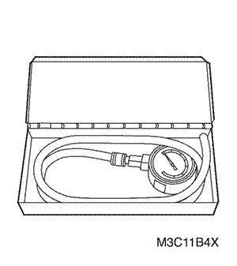
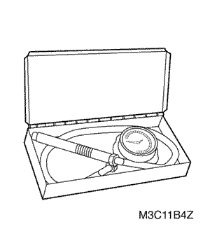
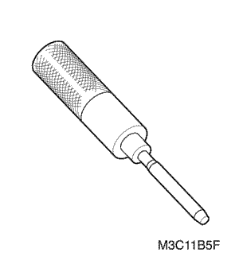
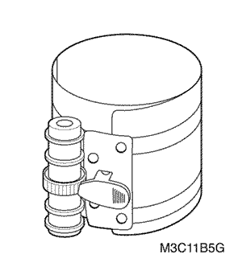
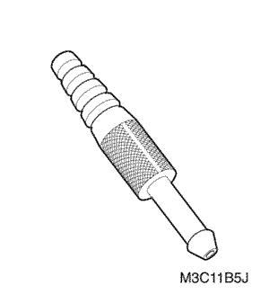
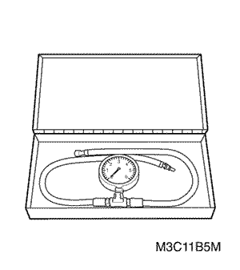
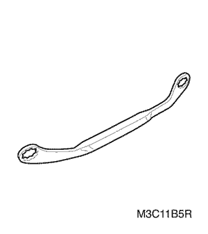
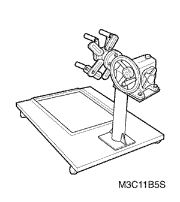
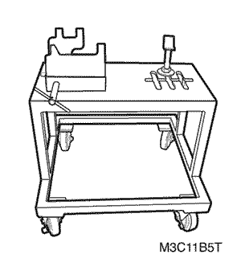

Kalos-Aveo | ||||||||
| ||||||||
| Aplicación | Descripción (Manual y automático) |
| Datos Generales: | . |
| Tipo de motor | 4 Cilindros (en-línea) |
| Cilindrada: | 1150 cm³ |
| Diámetro x carrera: | 68.5 x 78.0 mm (2.70" x 3.07") |
| Relación de compresión | 9.3 ± 0.2 :1 |
| Orden de encendido | 1-3-4-2 |
| Diámetro interior del cilindro: | . |
| Diámetro | 68.5 mm (2.70") |
| Ovalización (máxima) | 0.005 mm (0.00020") |
| Conicidad (máxima): | 0.005 mm (0.00020") |
| Pistón: | . |
| Diámetro | 68.465 ~ 68.485 mm (2.695 ~ 2.696") |
| Holgura entre pistón y cilindro | 0.025 ~ 0.045 mm (0.0010 ~ 0.0018") |
| Segmentos del pistón: | . |
| Segmento, distancia entre puntas: | . |
| | |
| | |
| Holgura de ranura: | . |
| | |
| | |
| Bulón del pistón: | . |
| Diámetro | 16.995 ~ 17.000 mm (0.6691 ~ 0.6693") |
| Descentrado del bulón del-pistón | 0.4 ~ 0.6 mm (0.016 ~ 0.024") |
| Árbol de levas: | . |
| Carrera de apertura - admisión: | 5.42 mm (0.213") |
| Carrera de apertura - escape | 5.38 mm (0.212") |
| Juego axial | . |
| Diámetro exterior de la muñequilla: | . |
| | |
| | |
| | |
| | |
| | |
| Diámetro exterior del cojinete: | . |
| | |
| | |
| | |
| | |
| | |
| Cigüeñal: | . |
| Muñón de bancada | . |
| | |
| | |
| | |
| | |
| | |
| Muñequilla de biela: | . |
| | |
| Conicidad (máxima) | 0.005 mm (0.0002") |
| Ovalización (máxima) | 0.005 mm (0.0002") |
| Holgura de los cojinetes de biela (todos) | 0.020 ~ 0.040 mm (0.0008 ~ 0.0016") |
| Holgura lateral de biela | 0.10 ~ 0.25 mm (0.004 ~ 0.010") |
| Sistema de válvulas: | . |
| Compensadores del juego de válvulas | Mecánicos |
| Ángulo de la cara de válvula (todos) | 45° |
| Ángulo de asiento (todos) | 45° |
| Excentricidad del asiento (máxima, todos) | 0.05 mm (0.0019") |
| Excentricidad de la cara de válvula (máxima, todas) | 0.045 mm (0.0018") |
| Anchura de asiento: | . |
| | |
| | |
| Diámetro interior de la guía de válvula (todos) | 5.500 ~ 5.512 mm (0.2165 ~ 0.2170") |
| Diámetro del vástago de válvula | . |
| | |
| | |
| Diámetro de válvula (todos): | . |
| | |
| | |
| Presiones del muelle de válvula: | . |
| | |
| | |
| Bomba del aceite: | . |
| Holgura entre la bomba de aceite y el rotor exterior | 0.10 ~ 0.17 mm (0.0039 ~ 0.0067") |
| Holgura lateral de rotor exterior | 0,065 ~ 0,115 mm (0,0026 ~ 0,0045 pulg.) |
| Holgura lateral de rotor interior | 0,065 ~ 0,115 mm (0,0026 ~ 0,0045 pulg.) |
| Longitud en reposo del muelle de válvula de descarga | 52.4 mm (2.06") |
| Aplicación | N•m | Árbol de transmisión izquierdo | Articulación |
| Tornillos de la culata | 65 - 70 | 48 - 52 | - |
| Tornillos hexagonales de la tapa de la culata | 9 - 12 | - | 80 - 106 |
| Tuercas del convertidor catalítico al colector de escape | 25 - 35 | 18 - 25 | - |
| Tornillos de la tapa inferior de la correa de distribución | 9 - 12 | - | 80 - 106 |
| Tornillos de la tapa superior de la correa de distribución | 9 - 12 | - | 80 - 106 |
| Tornillos de la polea del cigüeñal | 65 - 75 | 48 - 55 | - |
| Tornillos de la carcasa del filtro de aire | 7 - 9 | - | 62 - 80 |
| Tornillos de la placa de empuje del árbol de levas | 10 | - | 89 |
| Tornillos de fijación del eje del balancín | 10 | - | 89 |
| Tornillo y tuercas de la caja de salida de agua | 10.5 | - | 93 |
| Tornillo del tensor de la correa de distribución | 19 | 14 | - |
| Tornillo del tubo guía de la varilla de nivel de aceite | 10.5 | - | 93 |
| Tornillos de la bomba de aceite | 10.5 | - | 93 |
| Tornillos de la malla filtrante de la bomba de aceite | 10.5 | - | 93 |
| Tornillos de la tapa trasera de la correa de distribución | 10.5 | - | 93 |
| Tornillo del piñón del árbol de levas | 55 | 41 | - |
| Tuercas y tornillos de fijación de cárter del aceite | 10 | 44 | - |
| Tornillos y tuercas de fijación del colector de admisión | 17 | 13 | - |
| Tuercas y tornillos del colector de escape | 22 | 16 | - |
| Tornillos del soporte del tubo de escape delantero | 40 | 30 | - |
| Tuercas de la brida inferior del convertidor catalítico | 40 | - | 30 |
| Tornillos del escudo térmico del colector de escape | 10 | - | 89 |
| Tornillo del soporte de fijación del motor | 55 | 41 | - |
  | 09915-64510 Manómetro de compresión |
 | 09915-67310 Vacuómetro |
  | 09915-77310 Manómetro del aceite |
 | 09916-14510 compresor de muelles de válvula 09916-48210 Adaptador del compresor de muelles de válvula |
 | 09916-34541 Mango del escariador |
 | 09916-37320 Escariador de la guía de válvula (5 mm ó 0,1969 pulg.) |
 | 09916-38210 Escariador de la guía de válvula (11 mm ó 0,4331 pulg.) |
 | 09916-44910 Extractor de guías de válvulas |
  | 09916-58210 Fijación del instalador de guías |
  | 09916-77310 Compresor del pistón |
 | 09917-68220 Mango del piñón del árbol de levas |
 | 09917-88220 Fijación del instalador de guías de válvula |
  | 09918-08210 Juntura del vacuómetro |
 | 09927-56020 Soporte de la polea de cigüeñal |
  | DW 100-010 Manómetro de presión de combustible |
 | DW110-060 Fijación del soporte del conjunto motor |
  | DW 150-020 Extractor/instalador de tuercas de la carcasa del distribuidor |
  | KM - 412 soporte de reparación del motor |
  | DW 010 - 010 Extractor/instalador del soporte del conjunto de la caja de cambios y del motor |


| © Copyright Chevrolet Europe. Reservados todos los derechos |